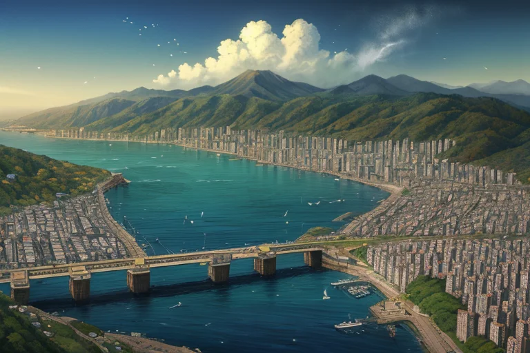
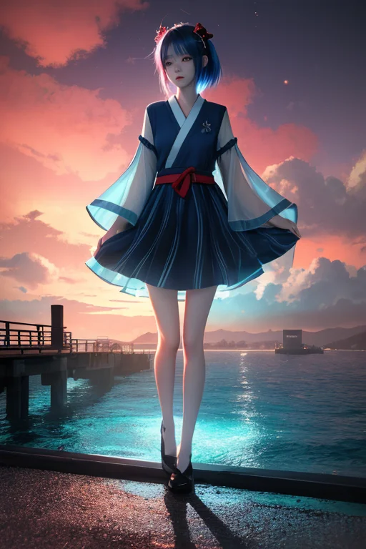
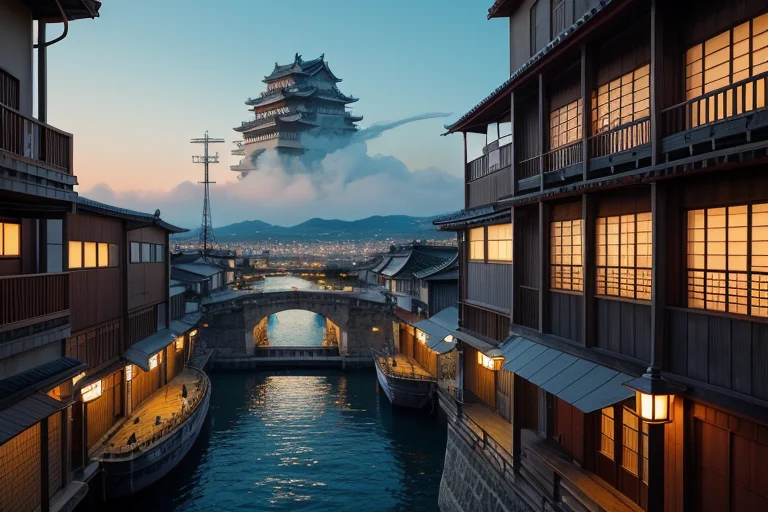
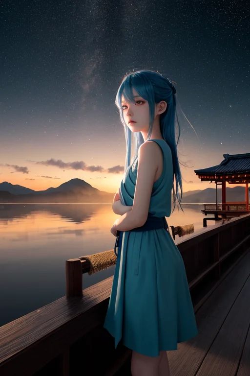
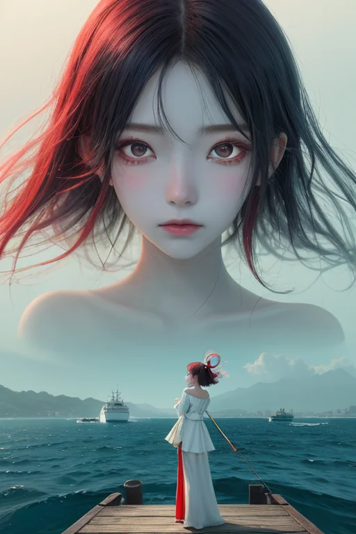

第一章 現実の兵庫
あなたはまだ気づいていない。この土地にも、王がいることを。
神戸港の埠頭に立つと、海はいくつもの色に分かれている。貨物船の航跡が引く青、岸壁を洗う濁った緑、遠く淡路島へと続く紺碧。ここは境界だ。内と外、日本と世界が出会い、時に衝突する場所。港の背後には六甲の山々が迫り、その向こうには平野が広がる。この土地は、海と山、異国と在来、新しきものと古きものが絶えず交差する、巨大な接合部なのだ。
一九九五年一月、その接合部は激しく破壊された。地割れは街を分断し、港のクレーンは折れた。あの日、多くの命が、多くの日常が、一つの歪みによって消えた。それは決して癒えない現実として、この土地の基層に刻まれている。
誰も知らない。あの揺れのほんの一瞬前、港を見下ろす異人館街の路地で、一人の青年がため息をついたことを。彼の目は、青と赤が微妙に混ざり合うような色をしていた。

第二章 歪みの兆候
神戸港の埠頭は、新しい波を受け入れていた。大型クルーズ船が接岸し、異なる言語が行き交う。妖精コウベリアは、その波の衝突を微かに和らげていた。しかし、彼女の表情には焦りがあった。港の地下深く、プレートの接合部に、外部から伝播した「歪み」が蓄積しつつあったのだ。それは遠く離れた大地の震えが、この交差点にまで届いたものだった。
交差王ヒョウゴリア・クロスは、淡路島の北淡震災記念公園に立っていた。断層保存館の大きな割れ目を見つめ、彼は自問した。この歪みを、どのように分配し、緩和するべきか。無理に抑えれば、別の場所が耐えられなくなる。感情という新たな感覚が、彼に葛藤をもたらした。何もかもを救うことはできない。ならば、何を選ぶのか。
彼は目を閉じた。街のざわめき、港の潮風、有馬温泉の湯気の奥に漂う哀しみ。すべてが交差する感覚。歪みは確かに増大していた。彼はただ、その波紋が最も多くの命を呑まない方向へ、ほんの少し、流れを変えようと決めた。

第三章 王の葛藤
姫路城の白亜の壁が、歪みの増大に伴う微かな軋みを発していた。交差王はその音を聞きながら、神戸の街を見下ろした。港には異国の船が入り、異人館の街並みには観光客の笑い声が流れる。そのすぐ下で、過去の大震災の記憶が地層のように重なり、新たな歪みが蓄積されつつあった。
彼の内側で二つの声がせめぎ合う。一つは王としての本分。歪みを均等に分散し、全体の崩壊を防げ。もう一つは、この地で育まれた感情に基づく声。あの港の倉庫街には、新たに家族を築いた若者がいる。あの温泉街には、震災で家族を失い、ただ湯に癒やしを求める老人がいる。均等などというのは冷酷な虚構ではないか。
妖精クロッサが彼の肩に止まった。「全ては交差点です。選ばないことも、一つの選択です」
彼は目を閉じた。選ばない。それは、歪みの奔流に全てを委ね、最も脆弱な一点が破綻するに任せることだ。彼は、港の倉庫街の直下を走る歪みの流れを、ほんの少し、淡路島の方向へと逸らした。島には人の少ない地域がある。それでも、誰かの平穏を犠牲にすることに変わりはなかった。
彼の胸に、初めて「罪」の感覚が刺さった。

第四章 妖精との対話
神戸港の波止場で、彼はクロッサに問うた。「なぜ、選ばなければならないのか」
妖精は、港を行き交う船の灯りを映した目で彼を見た。「王よ、この国は交差点そのものです。大陸と海、異国の文化と古い慣習、活断層と平野。全てがここで出会い、混ざり、時に衝突する。あなたの役目は、衝突そのものを消すことではなく、その衝撃が、あまりに多くのものを一瞬で壊さないように、ほんの少し方向を変えることです」
「方向を変えるとは、別の何かを犠牲にすることだ」
「そう。出会いは常に、別れを内包しています。港に新しい船が入れば、別の船は出て行く。新しい文化が入れば、古い習慣は霞む。あなたが歪みを逸らせば、その力は別の場所で解消される。完全な守りなどありません。ただ、『どの別れ』を選ぶか。それが、交差点で問われることです」
彼は、有馬温泉の地熱が、歪みのエネルギーを静かに吸収しているのを感じた。全てはトレードオフなのだ。彼の心に生じたこの「罪」の感覚こそが、感情進化の始まりだった。選び、そして選ばれた結果に、ただ一人で向き合うこと。それが王の、交差の宿業である。

第五章 微調整と余韻
神戸港の波止場で、彼は潮風に吹かれていた。異国の船が行き交い、様々な言葉が風に混ざる。ここは常に、内と外が出会い、時に衝突する場所だ。彼の役目は、その衝突のエネルギーを、破壊ではなく創造のきっかけへと微調整すること。阪神・淡路大震災の巨大な歪みは、彼一人では到底制御できなかった。だが、あの日、港のクレーンが倒れる方向をほんの数度変え、救援路を確保した。それは、救える命と救えない命の、残酷な交差点での選択だった。
淡路島の漁港で、彼は一人の老漁師と出会う。老人は震災で家族を失い、今は一人で船を出す。「あの時、なぜ俺だけが…」と呟く老人に、彼は何も言えなかった。代わりに、彼はそっと、老人の網が少しだけ豊漁となるよう、海流を微調整した。償いではない。ただ、生き延びた者が背負う「次」への、ささやかな手助け。
彼はもう、感情のない王ではない。葛藤を抱え、哀しみを知り、それでも選び続ける存在。交差点で何を選ぶか。答えは出ない。ただ、選んだ道の先で、出会うべき人と出会い、紡ぐべきものを紡ぐ。それだけだ。
港の向こうに、姫路城の白亜が霞んで見える。境界で、交差で、彼は立ち続ける。
あなたの町にも、王がいる。